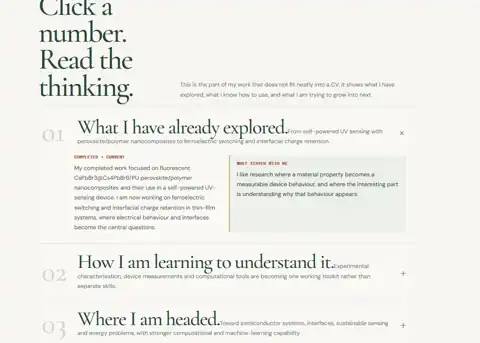

Research · thinking · direction
My work, in my own words
The direction
A sense of the trajectory.
The details will change as the questions change. The consistent thread is a move from understanding materials and interfaces toward designing systems where that understanding matters.
01
Semiconductor materialsMaterials, interfaces and electronic behaviour.02
Computational materialsDFT, Python and machine learning as research tools.03
Energy & sensingSelf-powered and efficient device concepts.04
Sustainable technologyLow-resource, practical approaches to real constraints.Projects
Projects that carry the story forward.
Below are the two projects currently in this archive. Open either one for the question, approach and what it taught me.